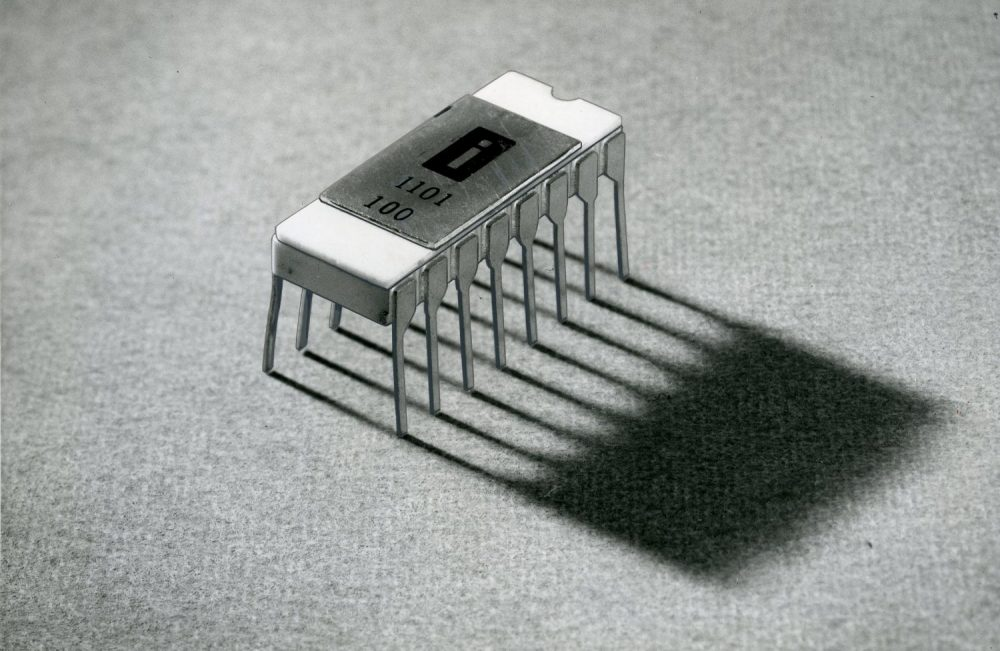
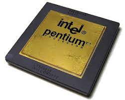
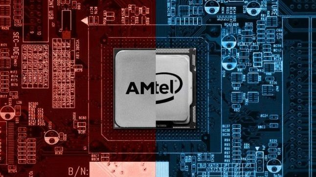

Создание
Первым этапом, затронувшим период с 1940-х по конец 1950-х годов, было создание процессоров с использованием электромеханических реле, ферритовых сердечников (устройств памяти) и вакуумных ламп. Они устанавливались в специальные разъёмы на модулях, собранных в стойки. Большое количество таких стоек, соединённых проводниками, в сумме представляло процессор. Отличительными особенностями были низкая надёжность, низкое быстродействие и большое тепловыделение.
Вторым этапом, с середины 1950-х до середины 1960-х, стало внедрение транзисторов. Транзисторы монтировались уже на близкие к современным по виду платы, устанавливавшиеся в стойки. Как и ранее, в среднем процессор состоял из нескольких таких стоек. Возросло быстродействие, повысилась надёжность, уменьшилось энергопотребление.
Третьим этапом, наступившим в середине 1960-х годов, стало использование микросхем. Первоначально использовались микросхемы низкой степени интеграции, содержавшие простые транзисторные и резисторные сборки, затем, по мере развития технологии, стали использоваться микросхемы, реализующие отдельные элементы цифровой схемотехники (сначала — элементарные ключи и логические элементы, затем — более сложные элементы — элементарные регистры, счётчики, сумматоры), позднее появились микросхемы, содержащие функциональные блоки процессора — микропрограммное устройство, арифметическо-логическое устройство, регистры, устройства работы с шинами данных и команд.
Четвёртым этапом, в начале 1970-х годов, стало создание, благодаря прорыву в технологии, БИС и СБИС (больших и сверхбольших интегральных схем, соответственно), микропроцессора — микросхемы, на кристалле которой физически были расположены все основные элементы и блоки процессора. Фирма Intel в 1971 году создала первый в мире 4-разрядный микропроцессор 4004, предназначенный для использования в микрокалькуляторах. Постепенно практически все процессоры стали выпускаться в формате микропроцессоров. Исключением долгое время оставались только малосерийные процессоры, аппаратно оптимизированные для решения специальных задач (например, суперкомпьютеры или процессоры для решения ряда военных задач) либо процессоры, к которым предъявлялись особые требования по надёжности, быстродействию или защите от электромагнитных импульсов и ионизирующей радиации. Постепенно, с удешевлением и распространением современных технологий, эти процессоры также начинают изготавливаться в формате микропроцессора.
Наше время
В наше время процессора способны выполнять ресурсно затратные вычесления с небольшим выделением тепла и высоким коофицентом полезного действия, что делает из них универсальное устройство для большинства современных задач будь то игра, работа с данными, математические уравнения или работа с документами.

популяризация
Переход к микропроцессорам позволил потом создать персональные компьютеры, которые проникли почти в каждый дом.
Первым общедоступным микропроцессором был 4-разрядный Intel 4004, представленный 15 ноября 1971 года корпорацией Intel. Он содержал 2300 транзисторов, работал на тактовой частоте 92,6 кГц[1] и стоил 300 долларов.
Далее его сменили 8-разрядный Intel 8080 и 16-разрядный 8086, заложившие основы архитектуры всех современных настольных процессоров. Из-за распространённости 8-разрядных модулей памяти был выпущен дешёвый 8088, упрощенная версия 8086 с 8-разрядной шиной данных.
Затем последовала его модификация, 80186.
В процессоре 80286 появился защищённый режим с 24-битной адресацией, позволявший использовать до 16 Мб памяти.
Процессор Intel 80386 появился в 1985 году и привнёс улучшенный защищённый режим, 32-битную адресацию, позволившую использовать до 4 Гб оперативной памяти и поддержку механизма виртуальной памяти. Эта линейка процессоров построена на регистровой вычислительной модели.
потребительский рынок
На текущий момент существует всего 2 компании, которые разрабатывают центральные процессоры, которые использует весь мир: intel и amd. С каждыми годом от них выходят всё более современные, мощные, энергоэффективные и уменьшаюшиеся чипы. Столь большое разнообразие позволяет потребителью выбрать продукт, который больше всего подойдет по бюджету и производительности.
